Asago, Hyogo: things to do, food and stays
Asago · Hyogo
Asago
Highlighted on the Hyogo map.

Stay
竹田城 城下町 ホテル EN（えん）
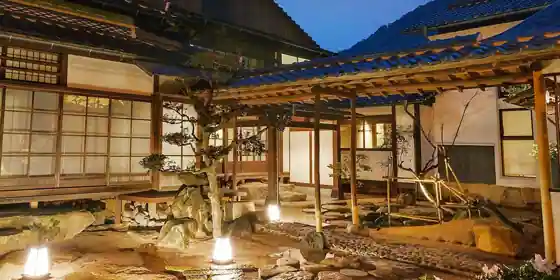
Takeda Shiro Jokamachi Hotel EN(En)
Hotel in Wadayama, Asago with a renovated traditional house.
一棟貸し SUGOMoRIリゾート生野高原
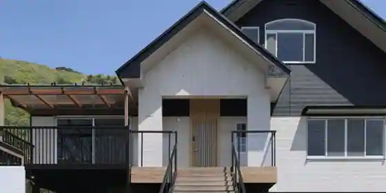
Hitomune Kashi SUGOMoRI Resort Ikuno Kogen
Resort hotel in Ikuno, Asago with a quiet countryside setting.
ファーストホテルいずみ
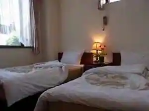
Fasuto Hotel Izumi
ビジネスホテルてつや
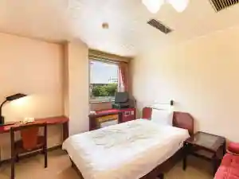
Business Hotel Tetsuya
Hotel in Wadayama, Asago with business travelers.
有斐軒
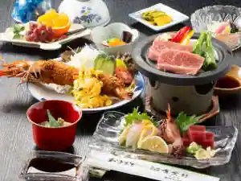
Yuhi Ken
Inn in Wadayama, Asago; 5-minute walk from Wadayama Station.
群鶴亭
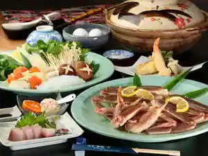
Gunkaku Tei
ＨＯＴＥＬ ＶＩＬＬＡＧＥ（旧：道の宿すてーしょん但馬）
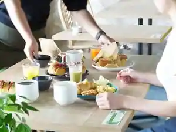
HOTEL VILLAGE(Kyu : Michi No Yado Suteshon Tajima)
Inn in Wadayama, Asago with business travelers.
ホテルエリアワン和田山
Hotel Eriawan Wadayama
Hotel in Wadayama, Asago with business travelers.
山東カントリークラブ CREST ASAGO
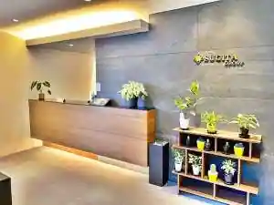
Santo Kantorikurabu CREST ASAGO
古民家宿そらいえ
Ko Minka Yado Soraie
Inn in Wadayama, Asago with a renovated traditional house.
宿屋天空
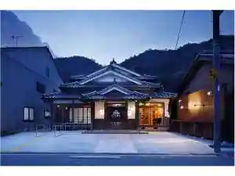
Yadoya Tenku
Inn in Wadayama, Asago; 1-minute walk from Takeda Station.
竹田町屋寺子屋はな亭
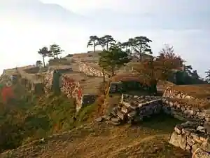
Takeda Machiya Terakoya Hana Tei
Dining
右衛門五郎
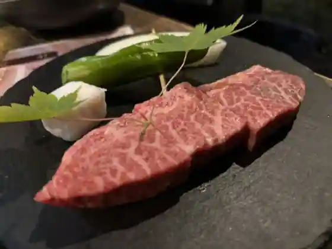
Uemon Goro
海鮮せんべい但馬
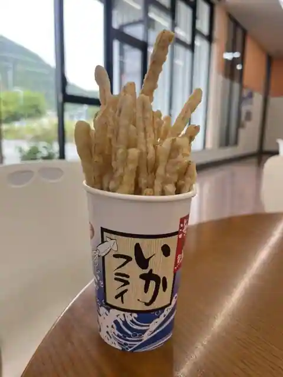
Kaisen Senbei Tajima
らいらっく
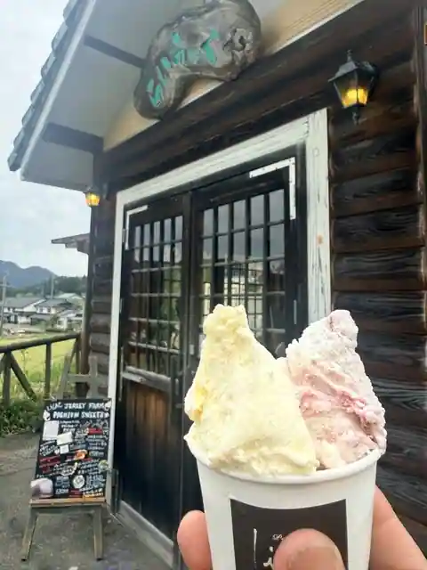
Rairakku
OAKYARD
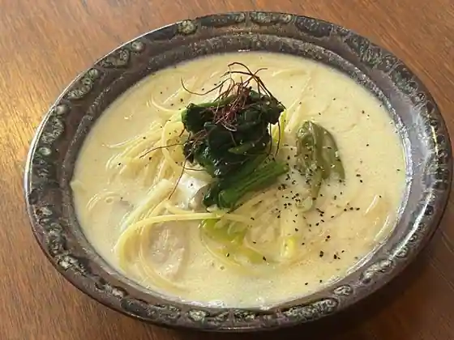
OAKYARD
蔓牛焼肉 太田家 和田山店
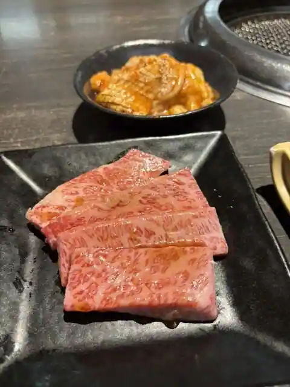
Tsuru Ushi Yakiniku Ota Ie Wadayama
ハンバーガー モミジ
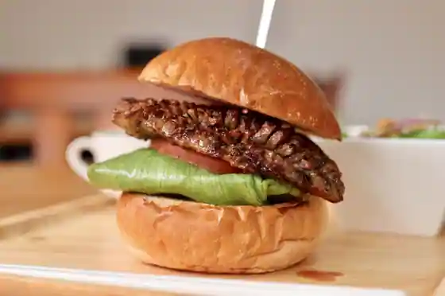
Han Burger Momiji
道の駅 但馬のまほろば 茶すり庵
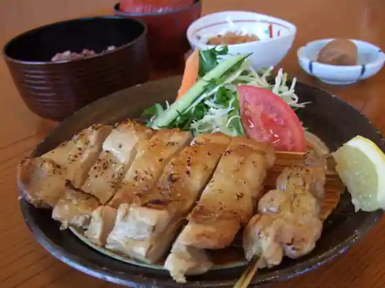
Michi No Eki Tajima Nomahoroba Cha Suri Iori
グランド シェフ
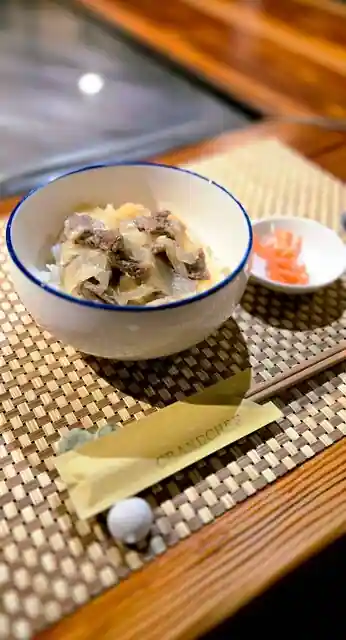
Grand Shiefu
ルアン 竹田城 城下町 ホテルEN
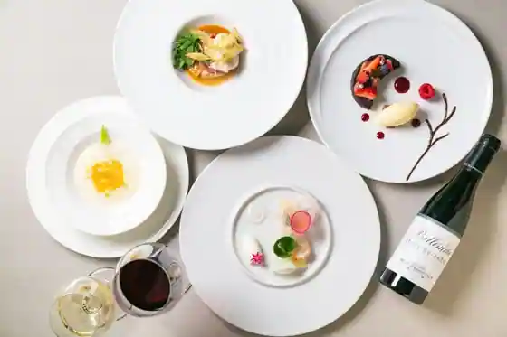
Ruan Takeda Shiro Jokamachi Hotel EN
芒種
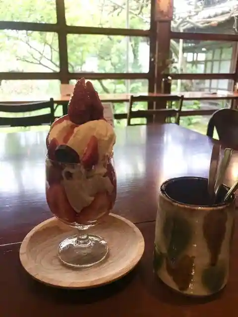
Boshu
一心 竹田店
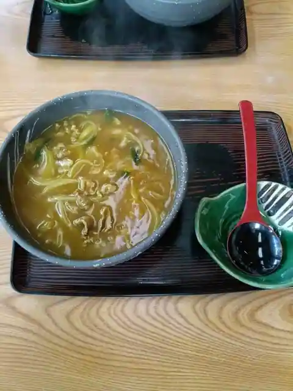
Isshin Takeda
喜古里
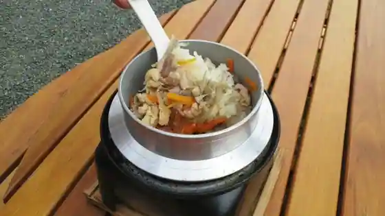
Ki Furusato
伊とう
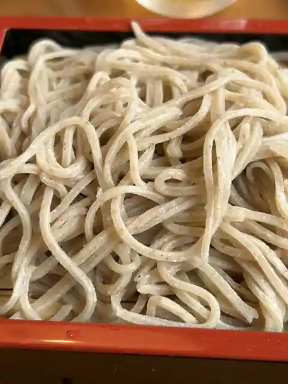
I To
播磨屋本店 生野総本店
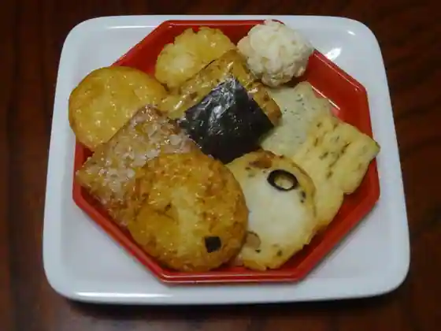
Harimaya Hon Ikuno So Hon
焼肉武藤道場
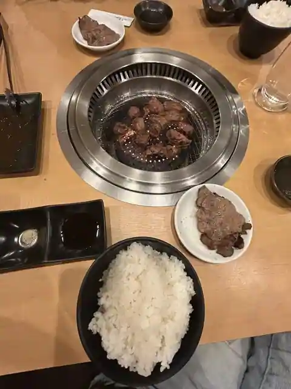
Yakiniku Muto Dojo
竹田屋
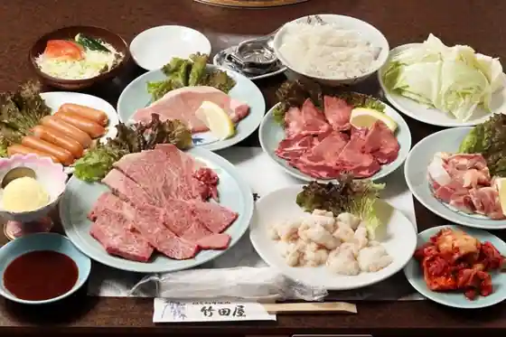
Takeda Ya
マロニエ
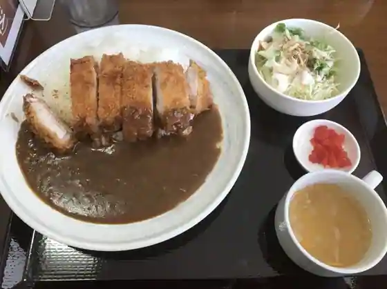
Maronie
生野高原 カッセル
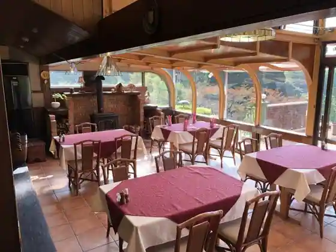
Ikuno Kogen Kasseru
手打ちうどん 一心 和田山店
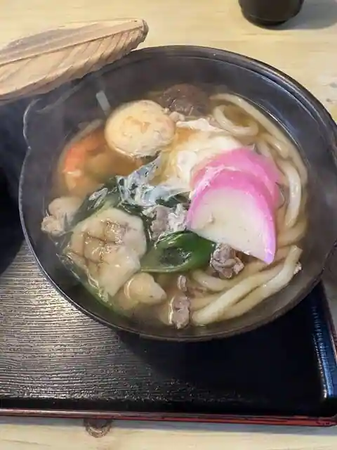
Teuchi Chiudon Isshin Wadayama
和心。
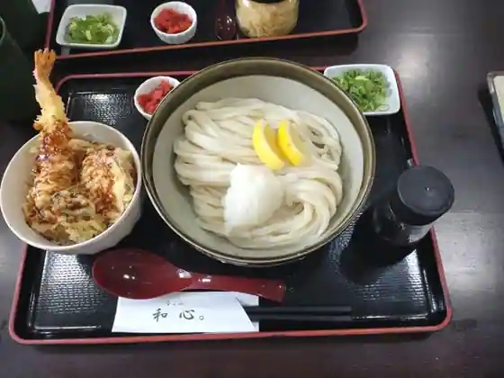
Wa Kokoro.
とんこつラーメン ジャラン ラスタレゲエ店
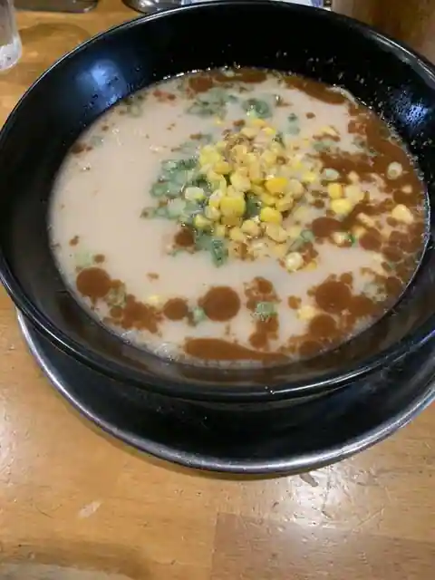
Tonkotsu Ramen Jaran Rasutarege
木香里
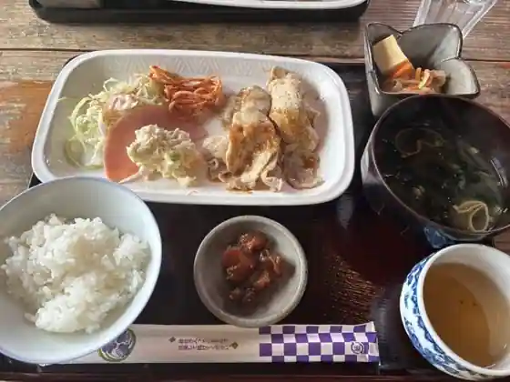
Mokko Sato
Sticks coffee
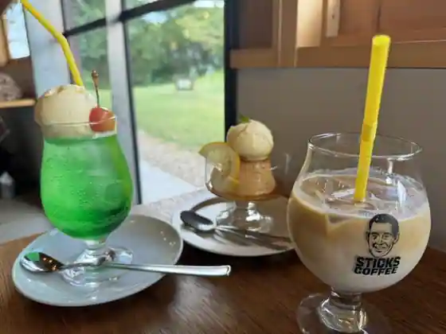
Sticks coffee
Sights
Takeda Castle Ruins
Mountain castle stonework nicknamed the castle in the sky for its sea-of-clouds views
Ikuno Silver Mine Historic Site
Preserved silver-mine tunnels and exhibits in the former Ikuno mining town